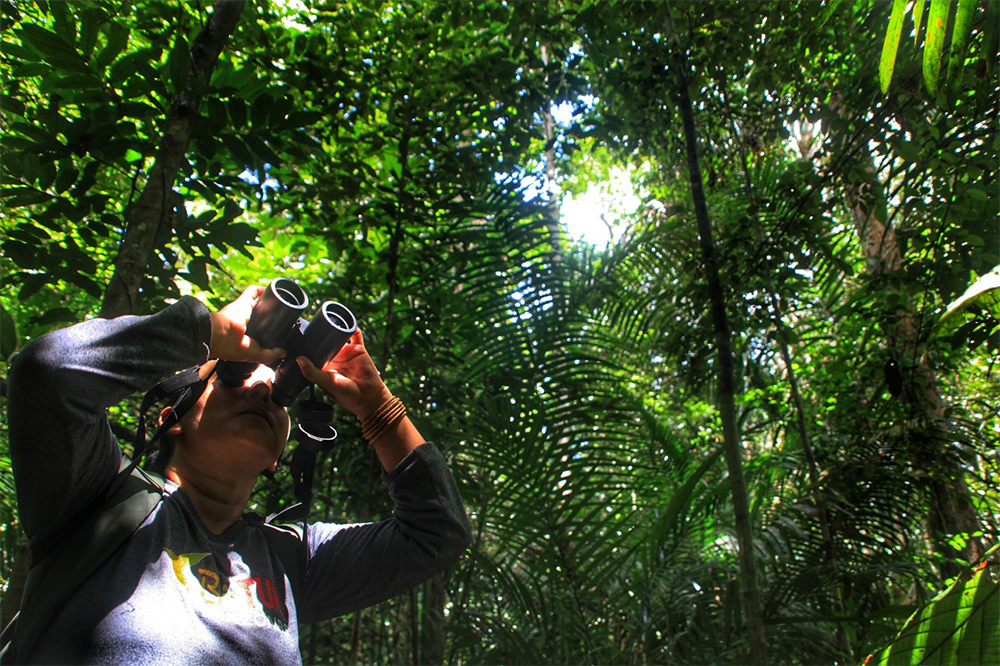
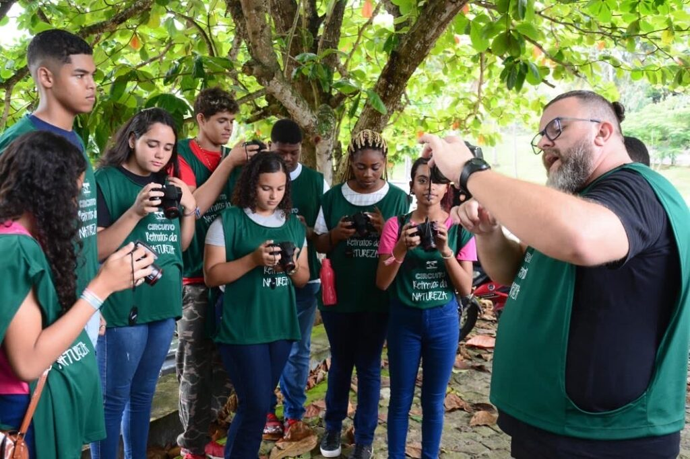

Próximos Eventos
Participe e conecte-se com a natureza.

JUL
20
Observação de Aves Noturnas
Uma caminhada guiada para observar as aves de hábitos noturnos da região. Inscrições abertas!

AGO
15
Oficina de Fotografia de Paisagem
Aprenda técnicas para capturar as melhores imagens das montanhas com um fotógrafo profissional.

SET
05
Dia de Voluntariado no Parque
Junte-se a nós para um dia de manutenção de trilhas e plantio de mudas nativas.